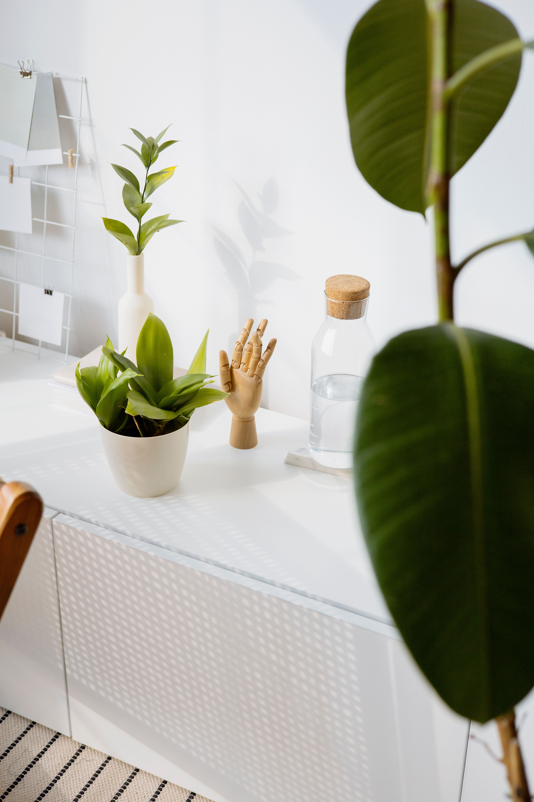

En este artículo
Introducción
Mantener las herramientas de jardín limpias, secas y en buen estado facilita el trabajo, prolonga su vida útil y ayuda a evitar que pequeños daños terminen convirtiéndose en averías o riesgos.
Antes de realizar cambios conviene observar el espacio, identificar sus condiciones reales y definir qué resultado se busca. Una planificación sencilla ayuda a evitar compras innecesarias, trabajos repetidos y soluciones difíciles de mantener.
Limpieza después de cada uso
La tierra húmeda, la savia y los restos vegetales se adhieren con facilidad a palas, tijeras y azadas. Retirarlos después de trabajar evita que la suciedad se endurezca y permite detectar corrosión, grietas o piezas flojas. Para la mayoría de herramientas manuales basta con eliminar la tierra con un cepillo y limpiar según las recomendaciones del fabricante.
Las herramientas de corte requieren especial atención cuando se utilizan sobre plantas enfermas. Limpiar y, cuando corresponda, desinfectar las superficies de corte puede reducir la transferencia de determinados patógenos entre plantas. Utiliza productos y procedimientos apropiados para el material de la herramienta y deja secar completamente antes de guardarla.
No guardes herramientas mojadas dentro de cajas cerradas. La humedad persistente favorece la oxidación de componentes metálicos y deteriora algunos mangos. Secarlas después de limpiarlas es una rutina sencilla que puede evitar muchos problemas.
Además de los criterios principales, conviene avanzar por etapas. Primero observa el espacio durante varios días y anota los problemas que realmente aparecen. Después establece prioridades: seguridad y funcionamiento deben resolverse antes que la decoración. Este orden evita invertir tiempo en detalles que más tarde tengan que modificarse.
También es útil trabajar con un presupuesto aproximado. No hace falta comprar todo al mismo tiempo. Separar el proyecto en fases permite comparar materiales, reutilizar elementos que ya existen y comprobar si las primeras decisiones funcionan. Cuando una solución exige mantenimiento periódico, anótalo desde el principio para valorar si encaja con la rutina de la casa.
Las condiciones ambientales cambian a lo largo del año. Luz, humedad, temperatura, viento y frecuencia de uso pueden transformar el comportamiento de un rincón doméstico o del jardín. Por eso una solución flexible suele ser más útil que una composición demasiado rígida. Observar, ajustar y mantener es parte del proyecto, no una señal de que el diseño inicial haya fallado.

Afilado, lubricación y revisión
Una tijera bien afilada realiza cortes más limpios y exige menos fuerza. Palas, azadas y otras herramientas también pueden beneficiarse de mantener sus bordes en condiciones adecuadas. El método de afilado depende de la herramienta y del ángulo original del filo. Si no tienes experiencia, sigue las instrucciones del fabricante o recurre a un profesional para no modificar la geometría de corte.
Las articulaciones de tijeras y podadoras deben moverse sin resistencia excesiva. Una pequeña cantidad del lubricante recomendado puede mantener el mecanismo operativo. Evita aplicar productos al azar, especialmente en herramientas con componentes plásticos o recubrimientos específicos.
Revisa tornillos, tuercas, remaches y mangos. Una cabeza metálica suelta en un mango no es solamente incómoda: puede convertirse en un riesgo. Los mangos de madera deben mantenerse lisos y sin astillas; los de fibra o plástico deben reemplazarse si presentan daños estructurales importantes.
La elección de materiales debe responder al lugar donde se utilizarán. En exteriores interesa comprobar resistencia a humedad, radiación solar y cambios de temperatura; en interiores pesan más la limpieza, el desgaste y la convivencia con el resto del mobiliario. Leer las instrucciones del fabricante evita aplicar tratamientos incompatibles.
Cuando sea posible, prioriza elementos reparables y fáciles de mantener. Una pieza sencilla que pueda limpiarse, ajustarse o sustituirse parcialmente suele ofrecer una vida útil más larga que otra cuya reparación sea complicada. Esto también ayuda a controlar el gasto a medio plazo.
La escala es otro aspecto esencial. Antes de comprar, mide y representa el objeto con cinta de pintor, cartón o marcas temporales. Esta prueba permite visualizar cuánto espacio ocupará realmente y cómo afectará a la circulación. En jardines, considera además el crecimiento futuro de las plantas; en interiores, abre puertas, cajones y sillas para comprobar que todo pueda utilizarse sin obstáculos.
Almacenamiento y mantenimiento estacional
El lugar de almacenamiento debería ser seco, ventilado y protegido de la lluvia. Colgar palas, rastrillos y azadas evita que queden dispersos por el suelo y facilita ver rápidamente qué herramientas están disponibles. Los instrumentos de corte pueden guardarse cerrados o con protectores cuando corresponda para reducir accidentes.

Al final de una temporada de uso intenso, realiza una revisión más completa. Limpia, seca, afila cuando sea necesario y sustituye piezas desgastadas. Las herramientas eléctricas o con motor necesitan seguir un mantenimiento específico indicado por su fabricante; baterías, combustibles, filtros y sistemas de corte no deben tratarse como herramientas manuales.
Crear una pequeña zona de mantenimiento con cepillo, paños y elementos básicos hace que cuidar las herramientas resulte más fácil. Dedicar unos minutos después de cada sesión suele requerir menos esfuerzo que intentar recuperar herramientas deterioradas después de meses de abandono.
El mantenimiento funciona mejor cuando se convierte en una rutina breve. Una revisión semanal o quincenal puede detectar suciedad, humedad, piezas flojas, hojas secas o pequeños daños antes de que se agraven. No todas las tareas deben hacerse con la misma frecuencia: conviene distinguir entre cuidados cotidianos, revisiones mensuales y trabajos estacionales.
Documentar algunos cambios también resulta útil. Una fotografía tomada al inicio permite comparar la evolución de plantas, materiales y distribución. Si algo no funciona, esa referencia facilita identificar cuándo apareció el problema y qué modificación pudo influir.
Por último, evita buscar perfección inmediata. Los espacios domésticos y los jardines están vivos porque se usan. Las mejores soluciones son las que toleran cambios, pueden corregirse y siguen siendo cómodas con el paso del tiempo. Un proyecto bien cuidado puede evolucionar sin necesidad de empezar desde cero cada temporada.
Una rutina completa para conservar las herramientas
Al terminar una sesión de jardinería, reúne las herramientas en un mismo punto antes de guardarlas. Retira tierra con un cepillo y presta atención a las zonas donde el metal se une al mango, porque allí puede acumularse humedad. Si has utilizado agua para limpiar, seca cuidadosamente. Esta rutina tarda pocos minutos cuando se realiza inmediatamente y evita tener que eliminar barro endurecido más adelante.
Las tijeras y podadoras acumulan savia que puede dificultar el movimiento. Límpialas con un producto compatible con sus materiales y sigue las indicaciones del fabricante para lubricar articulaciones. Si has trabajado con plantas que muestran síntomas de enfermedad, aplica un procedimiento de desinfección apropiado antes de pasar a otras plantas.
Observa los filos bajo buena luz. Pequeñas mellas, deformaciones o corrosión indican que puede ser necesario mantenimiento. No improvises con herramientas eléctricas de afilado si desconoces el ángulo correcto; retirar demasiado metal puede acortar la vida de la pieza. Un servicio profesional puede ser una opción razonable para herramientas de calidad.
Cuidar mangos y uniones
Los mangos de madera deben mantenerse secos y sin astillas. Una superficie áspera puede lijarse cuidadosamente cuando corresponda y tratarse con productos adecuados para ese tipo de madera. Si existen grietas profundas o la unión con la cabeza metálica está floja, no continúes utilizando la herramienta hasta repararla o sustituirla.
En mangos de fibra o materiales sintéticos, busca fisuras y deformaciones. No todos los daños pueden repararse de manera segura. Las empuñaduras deben ofrecer buen agarre y estar libres de grasa antes del uso. Comprueba también tornillos y tuercas, siguiendo el ajuste recomendado.
Carretillas, mangueras y herramientas de mayor tamaño también merecen revisión. Mantén ruedas con la presión adecuada cuando sean neumáticas, comprueba conexiones de mangueras y evita dejarlas permanentemente bajo sol intenso si el fabricante recomienda almacenarlas protegidas.
Preparar las herramientas para periodos de poco uso
Al final de la temporada, realiza una limpieza más profunda y separa las herramientas que necesitan reparación. Es mejor solucionar esos problemas antes de guardarlas que descubrirlos cuando vuelva el momento de trabajar. Organiza por función: corte, excavación, riego y mantenimiento. Esto facilita inventariar lo que ya tienes y evita compras duplicadas.
Las herramientas con batería requieren cuidados específicos. Consulta las instrucciones sobre nivel de carga, temperatura y lugar de almacenamiento. En equipos con motor, sigue el programa de mantenimiento indicado y manipula combustibles únicamente de acuerdo con las normas de seguridad aplicables.
Por último, mantén las herramientas fuera del alcance de niños y evita apoyarlas con puntas o filos orientados hacia zonas de paso. Un panel, ganchos resistentes o armarios adecuados permiten aprovechar la pared y mantener el suelo despejado. Cuidar las herramientas también significa guardarlas de manera que no representen un riesgo.
Preguntas frecuentes
¿Hay que limpiar las herramientas después de cada uso?
Es recomendable retirar tierra, humedad y restos vegetales con frecuencia. Una limpieza rápida después del uso facilita el mantenimiento y permite detectar daños antes.
¿Cuándo debo afilar las tijeras de poda?
Cuando notes que requieren más esfuerzo, aplastan tejidos en lugar de realizar un corte limpio o presentan un filo claramente deteriorado. Respeta siempre el ángulo de afilado original.
¿Dónde conviene guardar las herramientas?
En un lugar seco, protegido de la intemperie y organizado para que no provoquen tropiezos ni accidentes. Colgarlas puede ahorrar espacio y mantenerlas visibles.
Conclusión
Elegir soluciones adecuadas, observar cómo responde el espacio y mantener una rutina sencilla permite obtener mejores resultados a largo plazo. En lugar de buscar cambios apresurados, conviene adaptar cada decisión a las condiciones reales de la vivienda o el jardín, al tiempo disponible y al mantenimiento que se puede asumir. Así, cómo cuidar las herramientas de jardín se convierte en un proyecto práctico, ordenado y sostenible en el día a día.